Описание процесса для хакатона «Цифровой деканат будущего»: от постановки задачи до работающего кабинета студента и деканата, развёрнутого по ссылке.
MGIMO Hub: личный кабинет студента и рабочее место учебного офиса в одном продукте. Внутри работает ИИ-ассистент «Атташе», который отвечает по данным самого студента и готовит черновики заявок. Весь код, тексты, дизайн-система, тесты и развёртывание сделаны ИИ-агентами. Человек ставил задачи, принимал решения и проверял результат.
| Роль | Логин | Пароль | Что посмотреть |
|---|---|---|---|
| Студентка, МО, 3 курс | student.anna | Demo-Anna-26 | справки, документы с QR, повышенная стипендия под вопросом |
| Студент, МЭО, 2 курс, контракт | student.timur | Demo-Timur-26 | долг, направление на пересдачу, график оплаты |
| Студентка, ФЛМК, 1 курс | student.leyla | Demo-Leyla-26 | пустые состояния, кампус Одинцово |
| Студенческий офис, все факультеты | staff.office | Demo-Office-26 | очередь, заявки, аналитика, пересдачи |
| Учебный офис МЭО | staff.meo | Demo-Meo-26 | видит только свой факультет |
На странице входа есть «Быстрый вход для жюри»: любой аккаунт открывается одним касанием. Все люди, оценки и документы вымышлены.
Автор не учится в МГИМО, поэтому однокурсников не опрашивали. Вместо этого два ИИ-агента-исследователя параллельно собрали открытые источники: отзывы студентов, статьи о цифровизации вузов, бенчмарк чужих кабинетов, факты о МГИМО. По ним построены синтетические персоны с пометкой «сгенерировано ИИ» и анкета для реальной проверки.
| Что нашли в исследовании | Какое решение приняли | Где в продукте |
|---|---|---|
| Студенты каждый день открывают только расписание, главная страница кабинетов почти не используется | Главный экран отвечает на «куда идти, что изменилось, что сдать» | «Сегодня»: пара сейчас с таймером, изменения, дедлайны, заявки |
| Справку ищут не там, где она лежит, половина не находит раздел | Заказ в одно касание, названия словами студента, данные из профиля подставляются сами | «Заявки», кнопка «Справка» на главной |
| Запросы в деканат теряются, статус непонятен | Статус как у посылки: этапы, срок, ответственный, история, уведомление на каждом шаге | Карточка заявки и очередь учебного офиса |
| Балльная система непрозрачна | Одна фраза «как у меня дела» и калькулятор «что если» | «Учёба», карточка дисциплины |
| Переносы и замены узнают последними | Изменения подсвечены «было / стало», push-уведомление всей группе | «Расписание», деканат: «Изменить расписание» |
| Первокурсники не знают, к кому идти | ИИ-ассистент как первая линия, по своим данным | «Атташе» |
| Расписание не открыть в метро, иностранцам сложно по-русски | Приложение на телефоне с офлайн-режимом, английский интерфейс | PWA, переключатель языка |
Обязательное ядро ТЗ (вход и профиль, расписание, успеваемость, заявки со статусом, уведомления) мы сделали полностью. Дополнительные разделы выбирали по одному правилу: что сегодня заставляет студента идти в деканат ногами. Так появились запись на приём вместо живой очереди, «Я заболел» с письмом преподавателю, все справки с QR в одном месте, оплата для контрактников и пересдачи одним действием. Для деканата: радар рисков, аналитика, журнал действий и карточка студента, чтобы цикл «студент спросил, офис ответил» замыкался в одном продукте.
Два кабинета в одном продукте: 11 разделов для студента и 8 для учебного офиса. Всё работает на телефоне от 360 px, в светлой и тёмной теме, на русском и английском.
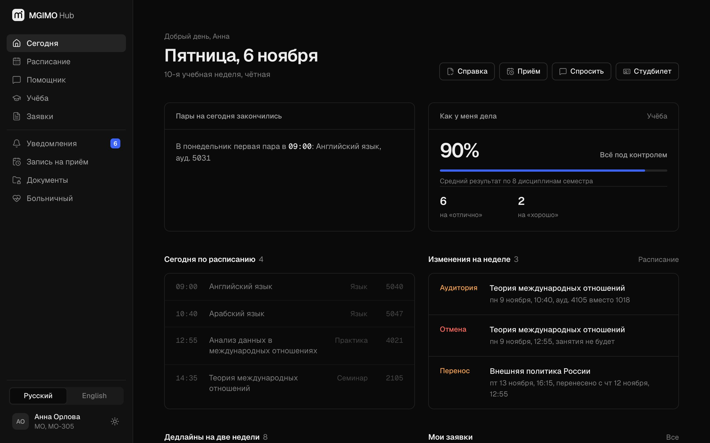
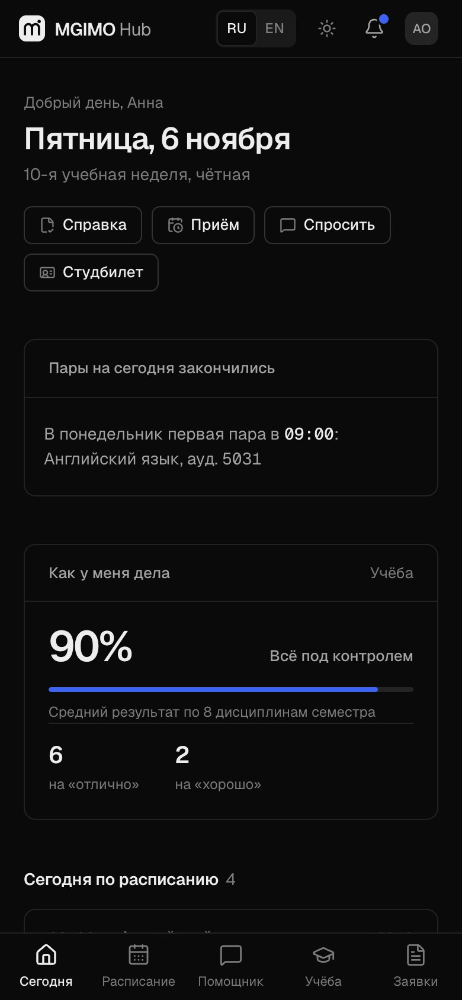
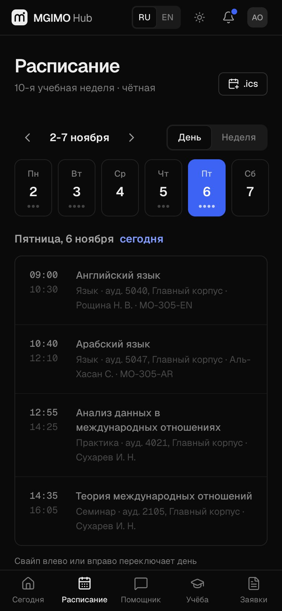
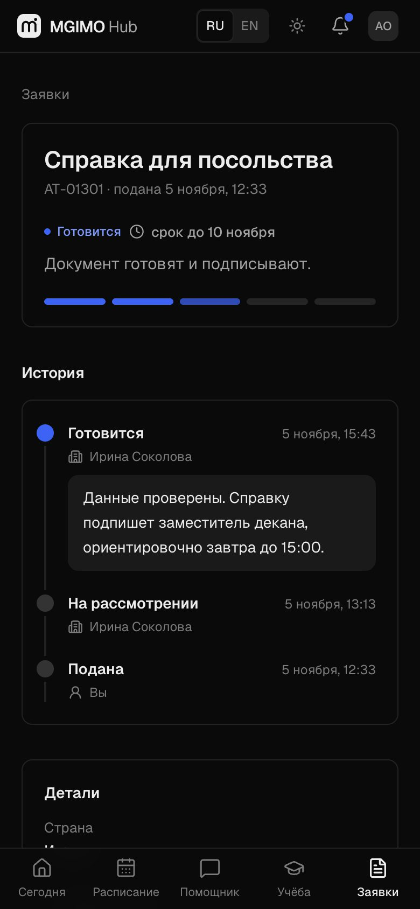
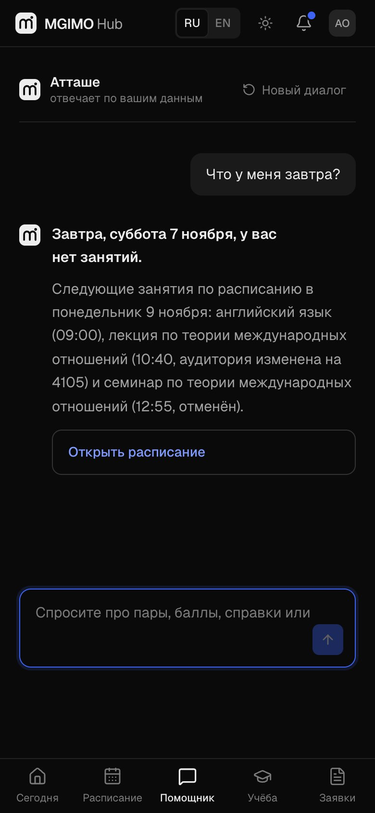
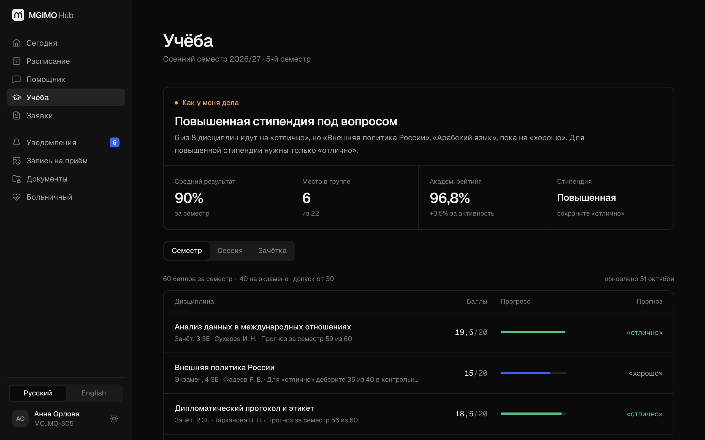
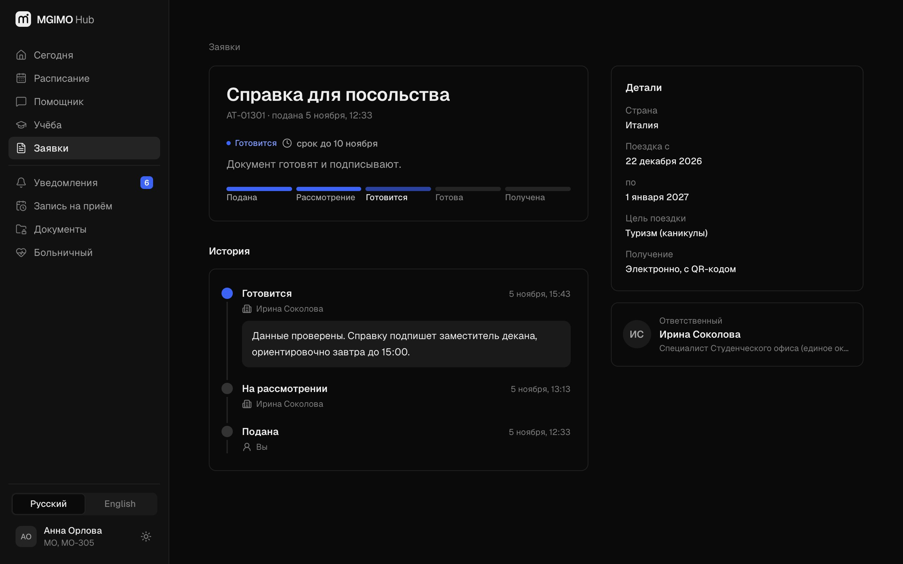
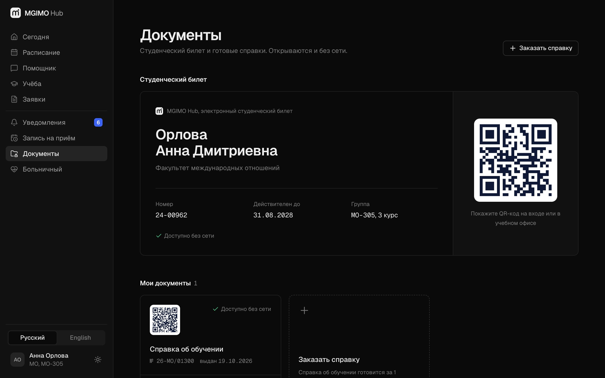
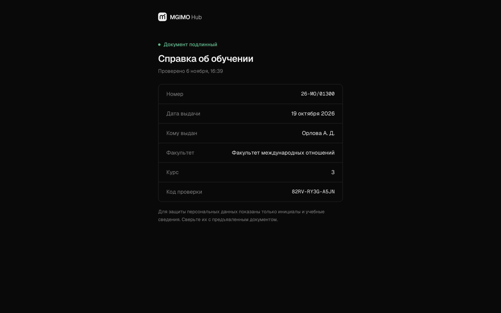
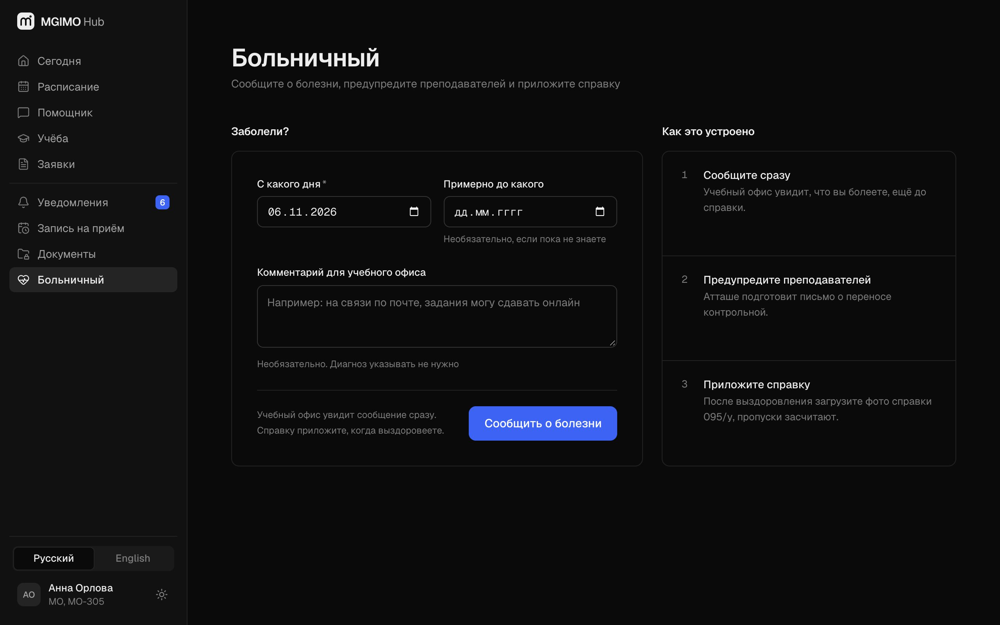
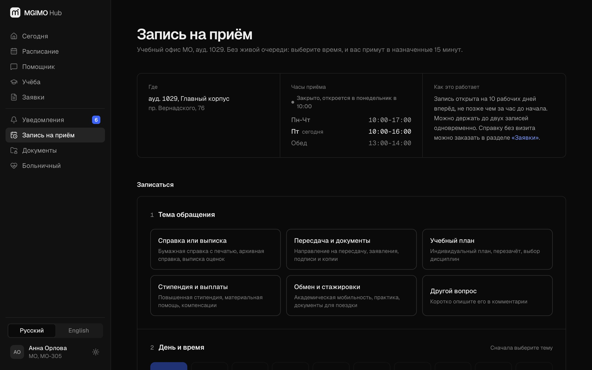
Сотрудник видит только свой факультет. Каждое действие сразу отражается у студента уведомлением и записывается в журнал, который нельзя изменить.
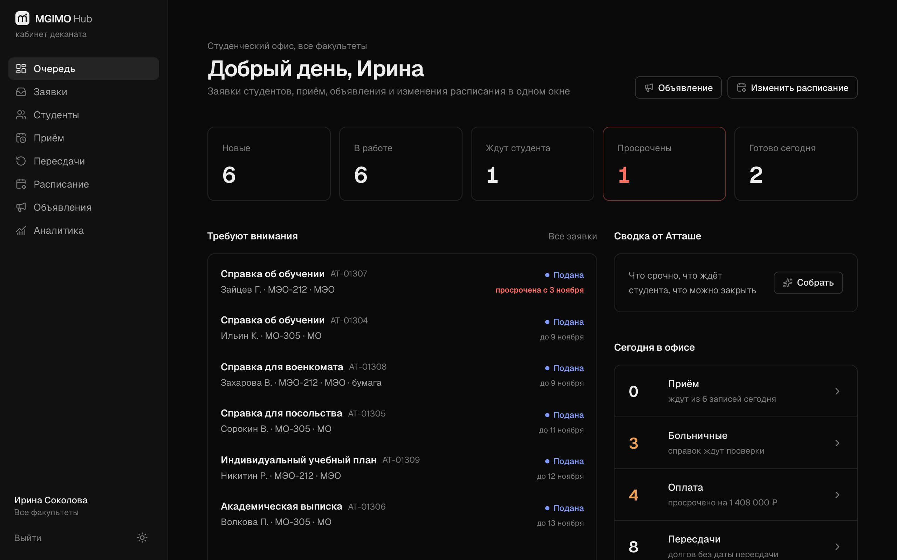
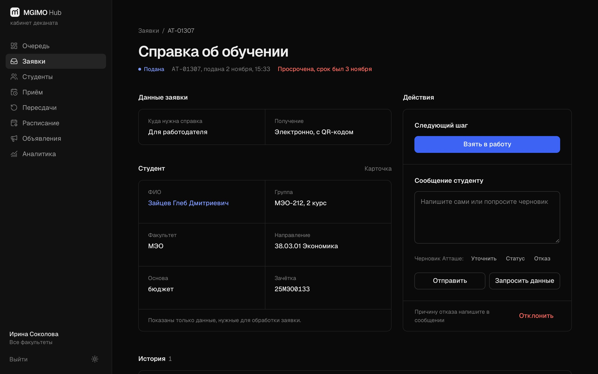
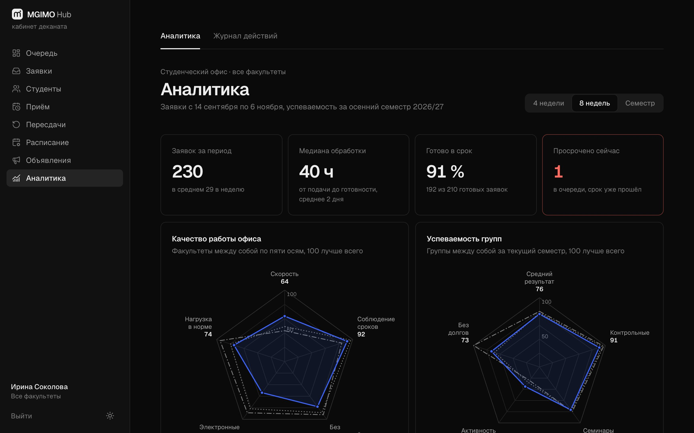
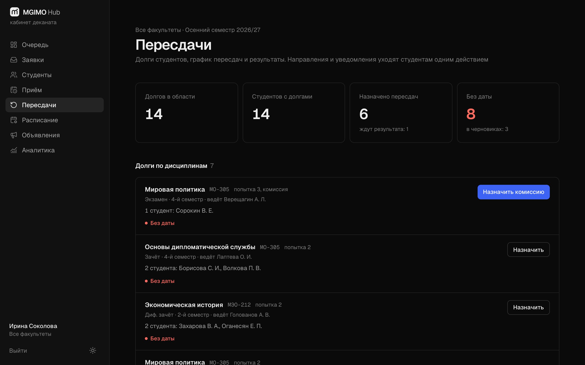
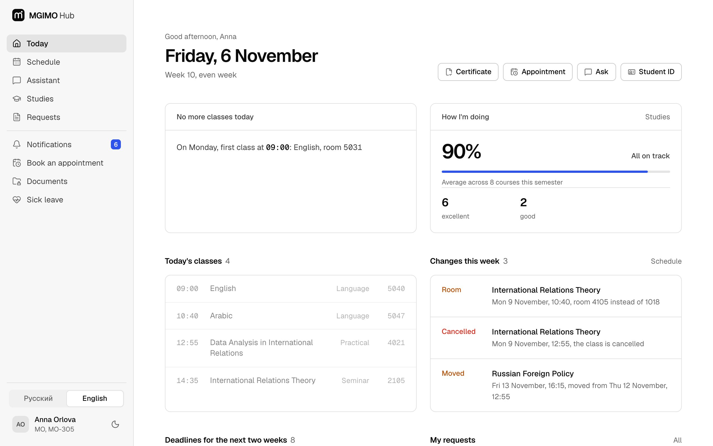
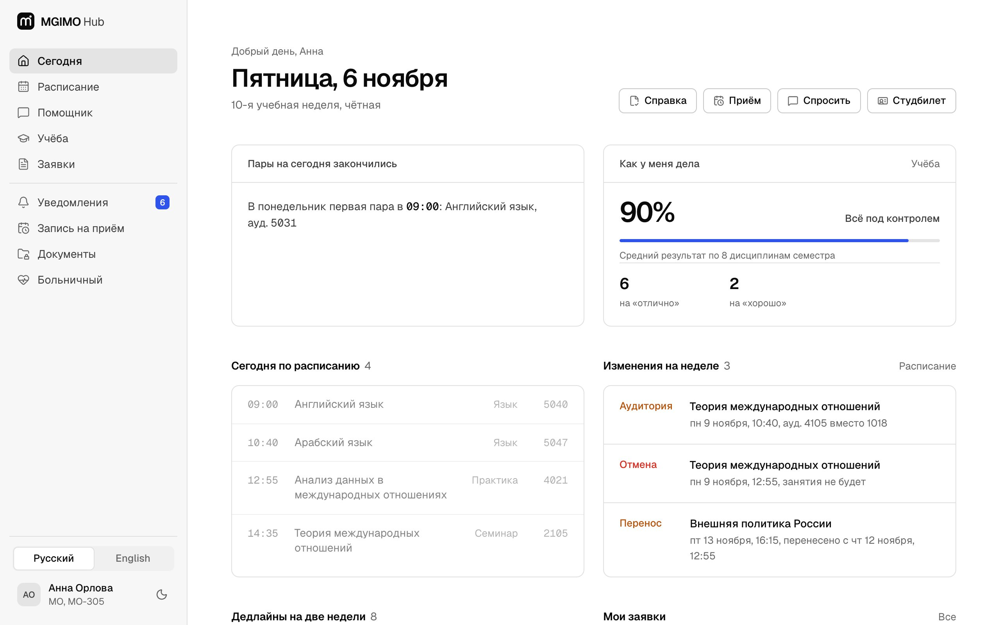
Отдельной IDE не было: весь код писал и запускал агент в Claude Code. Фигмы тоже не было: дизайн-система, логотип и анимация чернил на входе сделаны кодом.
| Инструмент | Где | Для чего использовали |
|---|---|---|
| Claude Code, десктоп-приложение, модель Claude Opus | код, документы | Главный агент: разбор ТЗ и критериев, исследование, архитектура, весь код (29 тыс. строк TypeScript), схема БД и миграции, тексты интерфейса, дизайн-система, тесты, Docker и развёртывание, этот документ |
| Субагенты Claude Code | код, исследование | 12 параллельных агентов: 2 исследователя (факты о МГИМО, боли студентов и бенчмарк) и 10 разработчиков, каждый со своим разделом продукта и своими файлами |
| Оркестрация Workflow в Claude Code | тестирование | Многоагентный QA: агенты по пяти областям, проверяющий агент после каждого круга, сверка с ТЗ, до трёх кругов исправлений (итоговый проход: 19 агентов, 531 вызов инструментов) |
| Навыки Claude Code (skills) | дизайн | redesign: аудит шаблонных ИИ-паттернов в интерфейсе; page-load-animations: рецепты сдержанных анимаций; workflow-authoring: сборка оркестрации агентов |
| Встроенный браузер Claude Code | проверка | Агент сам открывал кабинет, нажимал кнопки, мерил вёрстку на 360 px и снимал скриншоты после каждого крупного блока |
| Playwright с системным Chrome | проверка | e2e-сценарии (80 прогонов), обход 230 адресов на трёх ширинах, двух темах и двух языках, скриншоты для этого отчёта |
| DeepSeek V3.2 в Amazon Bedrock | внутри продукта | Модель Атташе: ответы студенту по его данным, черновики заявок и писем, черновики ответов и сводка очереди для деканата, сообщения студентам в зоне риска, перевод объявлений на английский |
| Память Claude Code | процесс | Постоянные заметки между этапами: решения автора, стиль, обходные пути окружения, чтобы агент не повторял ошибок |
| Docker, Google Cloud, Caddy, Let's Encrypt, sslip.io | развёртывание | Сборка образа, временный сервер в Финляндии, HTTPS-сертификат и адрес по IP. Всё настроил агент командами gcloud |
Тексты интерфейса, демо-данные (61 вымышленный студент, 1 172 занятия, 300 исторических заявок) и английские переводы написаны агентами, автор правил формулировки. Картинки нейросетью не генерировали.
Главный агент работал как техлид: разбирал задачу, писал документы для других агентов, раздавал работу параллельно и принимал её только после проверок. Человек выступал заказчиком и арт-директором.
ТЗ, критерии оценки, решения автора по стеку и ИИ
CLAUDE.md, PRD, дизайн, безопасность, журнал
свой раздел, свои файлы, общая схема БД заранее
тесты, браузер, проверяющий агент, Docker
замечания по скриншотам, новый круг
CLAUDE.mdПравила проекта, которые каждый агент читает первым: стек, команды, структура, 7 инвариантов безопасности, правила интерфейса автора.
AGENTS.mdПредупреждение «это не тот Next.js, что в обучающих данных»: агенты сверяются с документацией версии 16 из node_modules.
docs/PRD.mdПроблема, принципы, роли, обязательное ядро, смелые идеи, сценарии, которые проверяет жюри.
docs/DESIGN.mdСтрогий стиль v2: токены цветов, один акцент, шрифты, тон текстов, что запрещено.
docs/SECURITY.mdМодель угроз STRIDE, инварианты для разработчиков и агентов, что проверяет автотест.
docs/PROCESS.mdЖурнал этапов и ошибок ИИ. Агенты дописывали его сами после каждого значимого решения.
drizzle-kit generate ломал бы снимки схемы.Слева постановка автора в редакторской правке: формулировки приведены к рабочему виду, требования и порядок сохранены. Справа что сделал агент в ответ.
Участвую в хакатоне «Цифровой деканат будущего», ТЗ прилагаю. Работаю один, своей инфраструктуры нет, развёртывание передам позже. Требования: надёжный бэкенд, проработанный фронтенд, продуманные UX и UI. Ассистент внутри продукта работает на DeepSeek через API, GigaChat не используем.
Доступ к DeepSeek V3.2 получен через Amazon Bedrock, регион us-east-1. Укажи, где хранить ключ, подключение и проверку выполни самостоятельно.
ai:check без вывода ключаИнтерфейс выглядит как типовая генерация нейросети, палитра неудачная. Нужен полный редизайн. Ограничения: без стрелок и длинных тире в текстах, логотип монохромный и выразительнее. Название продукта: MGIMO Hub.
Страница входа не дотягивает до уровня продукта. Новая композиция: форма справа, анимированное появление логотипа, живые чернила на фоне.
Блоки в профиле не выровнены, интерфейс выглядит сжатым. Добавь сдержанные анимации внутри сервиса с опорой на навыки. Оставь две темы: светлую и тёмную. Деканату нужны генератор справок и доступ к ассистенту.
Исследуй, какие задачи студентов ещё не решены. Обязательно: работа без интернета и push-уведомления, чтобы расписание открывалось в метро; график оплаты и напоминания для платного обучения; английский интерфейс для иностранных студентов; все справки с QR-кодом в одном разделе; сценарий «Я заболел». Отдельно предложи, что ещё полезно деканату.
Проведи полный аудит UX и UI: каждая кнопка и каждый сценарий должны работать. Покрой тестами только ключевые пути, исправь найденное, не больше трёх итераций. Сверь результат с ТЗ и подготовь проект к сдаче.
Блоки разной высоты, на главной приходится прокручивать. Студенческий билет дублируется в профиле и в документах, нужен один источник. Навигация деканата перегружена, «Радар» убрать из меню.
Новости деканата и личные уведомления в английской версии остаются на русском. Нужен полный перевод, включая имена.
Разверни временный демо-стенд в Google Cloud с адресом на sslip.io. Отдельный проект, расходы только за счёт кредитов. Для ассистента используй выданный ключ.
Цель, ограничения и модель названы сразу: агент не тратит итерацию на догадки о бюджете, составе команды и стеке.
Стрелки, длинные тире, дисклеймеры, лишние пункты меню перечислены прямо. Вкус автора не приходится угадывать.
«Не больше трёх кругов» ограничивает полировку: агент чинит главное и сдаёт результат, а не шлифует бесконечно.
Ревью идёт по скриншотам. Агент ищет общую причину дефекта и чинит её во всех экранах, а не в одном месте.
Вопрос «что ещё не решено у студентов» запускает исследование и план, и только потом разработку.
Отдельный проект, расходы только из кредитов, ключи только в окружении сервера и без вывода в журнал.
Каждое задание устроено одинаково: роль и контекст, что прочитать до работы, что сделать по шагам, границы файлов, инварианты безопасности и критерии готовности. Ниже фрагменты настоящих заданий, сокращения отмечены многоточием.
Роль. Ты UX-исследователь для хакатона «Цифровой деканат будущего». Автор не учится в МГИМО, поэтому опросить однокурсников он не может: нужна кабинетная база из открытых источников. Границы. Запиши результат в docs/research/student-insights.md. Больше никакие файлы проекта не трогай. Структура. 1. Ключевые боли (8-12), по каждой 1-2 подтверждения из источников и вывод для дизайна. 2. Бенчмарк 5-7 кабинетов: что позаимствовать, что раздражает. 3. Синтетические персоны с явной пометкой «сгенерировано ИИ». 4. Jobs To Be Done. 5. Выводы для прототипа. 6. Анкета для реальных студентов. 7. Источники. Правила. Только публичные источники, без персональных данных реальных людей …
Задача. Сейчас студенту после болезни нужна неделя хождений: отнести справку, объяснить пропуски, договориться о переносе контрольных. Делаем один сценарий в кабинете и очередь проверки у деканата. Сначала прочитай. CLAUDE.md (инварианты), docs/DESIGN.md, docs/SECURITY.md, AGENTS.md: Next.js 16, сверяйся с node_modules/next/dist/docs, про загрузку файлов и лимиты тела запроса тоже посмотри там. Таблицы sick_leaves и sick_leave_files уже есть, миграция применена. Схему НЕ меняй. Паттерны. data/schedule.ts (пары за период), data/staff.ts (область сотрудника: facultyId null значит все факультеты), assistant/providers.ts (вызов модели, офлайн-фолбэк, чистка тире) … Что сделать. Нет открытого больничного: форма «Сообщить о болезни». Есть открытый: что затрагивает (пары и дедлайны в периоде), для каждой дисциплины «Письмо преподавателю»: черновик от Атташе, офлайн-шаблон, если модели нет …
ВАЖНО, это хакатон: тестов немного и только на главное. Цель: всё нажимается и работает. В спеке области 4-8 тестов на ключевые сценарии. Не трогай чужое. Встроенный браузер принадлежит пользователю, скриншоты только через Playwright. Не пересоздавай базу: это сделает финальный этап. Тесты, меняющие данные, должны перезапускаться на той же базе. Владение файлами. studentCore: вход, оболочка, Сегодня, расписание, учёба, профиль. studentServices: заявки, уведомления, помощник, документы. serviceFlows: приём, больничный, оплата. staffCore и staffInsights: деканат … Отчёт по схеме. fixed[], remaining[], crossArea[] (проблема в чужом файле с путём и предложением), testsPassed, testsFailed.
Задания субагентам, промпты исследователей и сценарии оркестрации лежат в репозитории и истории проекта: docs/prompts/, docs/PROCESS.md.
Каждую ошибку записывали в журнал с тем, как её нашли. Самый частый способ: автотест или живой прогон, а не чтение кода. Полный список из 34 пунктов в docs/PROCESS.md.
| # | Что пошло не так | Как нашли | Как исправили |
|---|---|---|---|
| 1 | Знания модели о Next.js устарели: новая версия 16 с другими API | предупреждение в AGENTS.md | агент читал документацию версии из node_modules до написания кода |
| 8 | Чужая заявка отдавала HTTP 200: скелетон загрузки начинал ответ раньше проверки доступа | автотест безопасности | у детальных страниц нет скелетона, честный 404 |
| 31 | Та же ошибка повторилась у разных агентов ещё три раза | e2e-тест на 404 по чужому id | правило в заданиях сработало только вместе с тестом, теперь оба |
| 9 | На 360 px главный экран расползался до 525 px | автопроверка ширины | базовый трек сеток minmax(0,1fr) |
| 15 | Модель отвечала «"отлично" невозможно», хотя впереди ещё 40 баллов | живой прогон вопросов к Атташе | в контекст добавлены «сколько ещё можно набрать» и правило |
| 17 | Черновик для студента в зоне риска советовал подать заявление, которое уже подано | живой прогон черновика | в контекст переданы открытые заявки студента |
| 30 | Атташе говорил, что дата пересдачи не назначена, хотя направление уже выпущено | вопрос к ассистенту в собранном Docker-образе | в контекст долга добавлены дата, аудитория и номер направления |
| 21 | Ось «Без долгов» в аналитике не видела долг: подзапрос ссылался не на ту колонку | сверка диаграммы с SQL | явные алиасы таблиц |
| 24 | Защитный заголовок у файла справки перезаписывался глобальным правилом | проверка заголовков curl-ом | отдельное правило для этого пути |
| 34 | Модель не всегда давала кнопку черновика справки для визы | e2e-тест ассистента | правило в системном промпте на двух языках |
Первую версию автор отклонил: градиенты, «золото», засечки, иконки в цветных плашках, синюшная тёмная тема. Агент разобрал эти признаки шаблонного ИИ-дизайна и пересобрал систему: нейтральные серые, один кобальтовый акцент, шрифт Geist, без теней и декора.
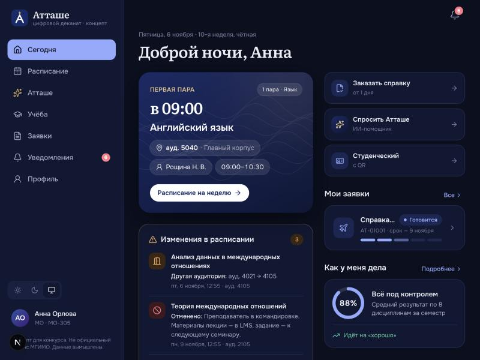
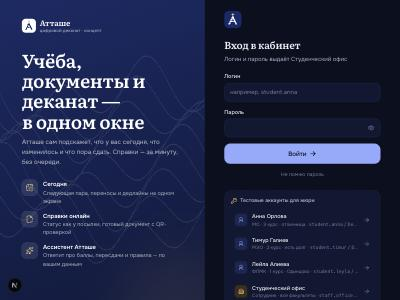
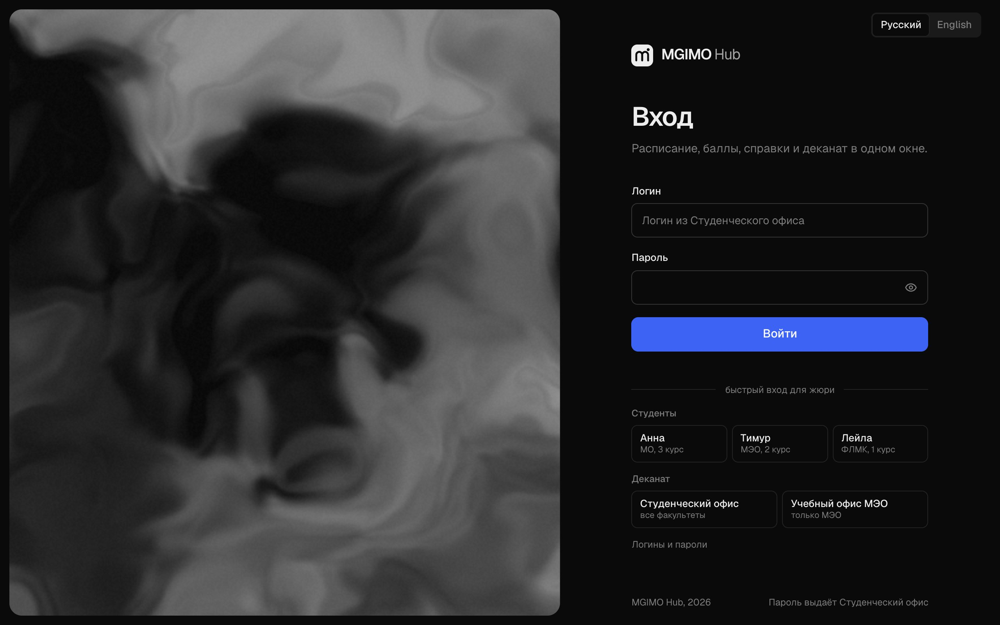
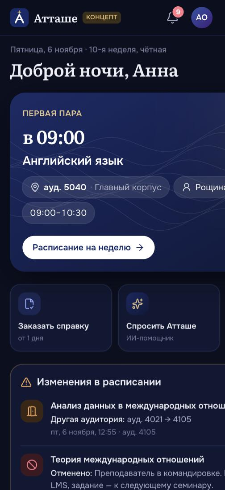
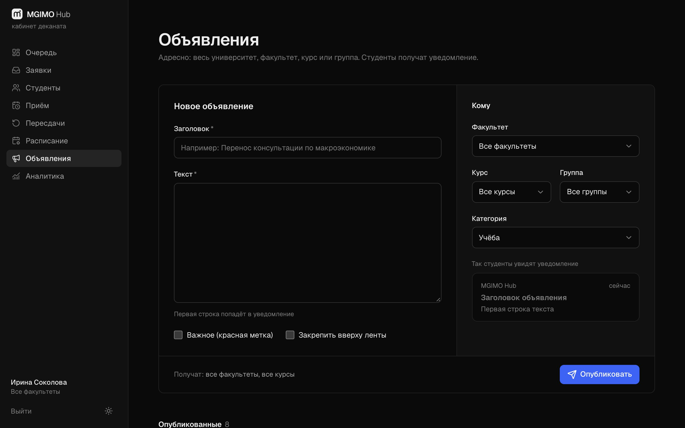
Атташе отвечает по данным самого студента и превращает фразу «нужна справка для визы в Италию» в готовый черновик заявки. Отправляет её всегда студент сам.
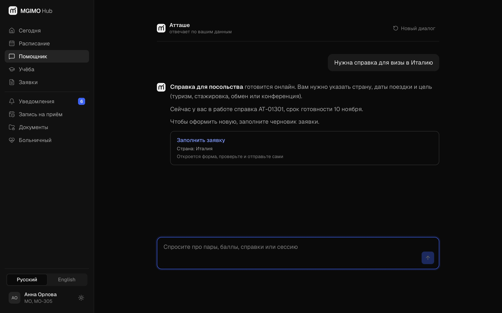
| Студент | ответы про пары, баллы, сессию, справки по своим данным |
| Студент | черновик заявки из обычной фразы |
| Студент | письмо преподавателю о переносе контрольной при болезни |
| Деканат | черновик ответа студенту: уточнить, статус, отказ |
| Деканат | сводка очереди: что срочно, что ждёт студента |
| Деканат | сообщение студенту в зоне риска |
| Деканат | перевод объявления на английский после публикации |
В контекст модели попадают данные текущего студента и ничего лишнего: без телефона, почты, даты рождения и номера зачётки.
Модель возвращает ответ и действия. Сервер проверяет каждое: тип заявки, значения полей, свои курсы, только внутренние ссылки.
Без ключа или при сбое API включается офлайн-режим на правилах, демо не ломается. Ключ хранится только на сервере.
Пароль нигде не хранится. В базе лежит только его «отпечаток» argon2id: современный стандарт, медленный для перебора.
После входа браузер получает случайный ключ в защищённой cookie, недоступной скриптам страницы. В базе хранится не сам ключ, а его хэш: даже утечка базы не даст войти.
Сервер узнаёт студента по сеансу и отдаёт только его записи. Номер заявки в адресе означает лишь «какую из моих». Чужая заявка открывается как «страница не найдена».
После 5 неудачных попыток вход по логину блокируется на 15 минут, есть отдельный лимит по IP.
Сотрудник видит только свой факультет. Каждый просмотр карточки студента и каждое действие пишутся в журнал, который нельзя изменить или удалить: это запрещено на уровне базы данных.
Ключи ИИ и push-уведомлений лежат только в переменных окружения сервера. В коде и в браузере их нет.
npm run test:security делает 46 проверок против работающего сервера: открыть чужую заявку, справку, дисциплину, талон, квитанцию; зайти студентом в кабинет деканата; сотрудником другого факультета открыть чужую заявку; проверить флаги cookie, заголовки CSP и HSTS, хэши в базе, блокировку после 5 попыток, CSRF у ассистента, минимум данных на странице проверки справки. Последний прогон против публичного адреса: 46 из 46.
Все студенты, преподаватели, оценки и документы вымышлены. На справках и квитанциях водяной знак «образец», страницы закрыты от поисковиков, логотипа МГИМО нет: у продукта свой знак.
Один Next.js-сервер без состояния и PostgreSQL. Сеансы и лимиты хранятся в базе, поэтому приложение можно запускать в несколько экземпляров за балансировщиком.
proxy.ts проверяет сеанс. Слой данных src/lib/data: каждый запрос начинается с requireStudent() или requireStaff(), фильтр по id из сеанса.| Слой | Что использовано и почему |
|---|---|
| Фронтенд | Next.js 16, React 19, TypeScript strict, Tailwind CSS 4, свои UI-компоненты, motion для анимаций |
| Бэкенд | серверные компоненты и Server Actions в том же Next.js: меньше движущихся частей, проверка прав рядом с данными |
| Данные | PostgreSQL 17 и Drizzle ORM: стабильный, чистый TypeScript, без бинарного движка, проще Docker |
| Вход | argon2id, случайный токен 256 бит в httpOnly-cookie, в базе SHA-256 токена, лимиты в базе |
| Валидация | zod на каждом входе: формы, API, ответы модели |
| Развёртывание | Docker Compose: база, приложение, Caddy. Миграции и демо-данные применяются при старте контейнера |
Код вручную автор не писал. Он отвечал за рамки проекта, продуктовые и визуальные решения, доступы к внешним сервисам и приёмку результата.
Сформулировал задачу по ТЗ и ограничения: участие в одиночку, без своей инфраструктуры на старте, DeepSeek как модель ассистента.
Получил доступ к DeepSeek V3.2 в Amazon Bedrock и сам внёс ключ в окружение. Определил проект Google Cloud для демо-стенда.
Отклонил первую версию интерфейса, из трёх направлений утвердил строгое. Задал правила текстов: без длинных тире, стрелок и дисклеймеров.
Определил состав новых разделов, отказался от рассылок по сегментам, убрал «Радар» из меню, студбилет оставил в «Документах».
Принимал каждую итерацию на ноутбуке и телефоне, фиксировал дефекты скриншотами: неровная сетка, сжатые экраны, дрожание фона.
Проверка с российского мобильного интернета, запись демо-видео, отправка работы через личный кабинет хакатона.
| # | Шаг | Что увидеть |
|---|---|---|
| 1 | Вход как student.anna | «Сегодня»: какая пара идёт, смена аудитории, дедлайны, статус справки для посольства |
| 2 | «Расписание» | неделя с переносом, отменой и другой аудиторией, экспорт в календарь |
| 3 | «Учёба» | «как у меня дела», рейтинг, калькулятор «что если» в дисциплине |
| 4 | «Заявки», «Справка об обучении» | форма с данными из профиля, статус «Подана», срок, трекер |
| 5 | «Атташе», «Нужна справка для визы» | ответ по своим данным и кнопка готового черновика |
| 6 | Выход, вход как staff.office | заявка Анны в очереди, «Взять в работу», «Готово», и у Анны сразу уведомление и справка с QR |
| 7 | Подставить чужой id в адрес | «страница не найдена»: чужие данные не открываются |
| 8 | Открыть с телефона | всё то же на 360 px, установка на экран, офлайн-расписание |